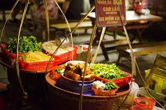
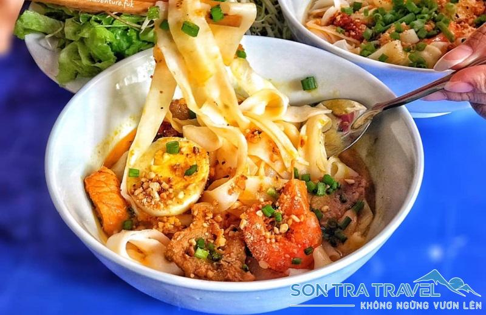
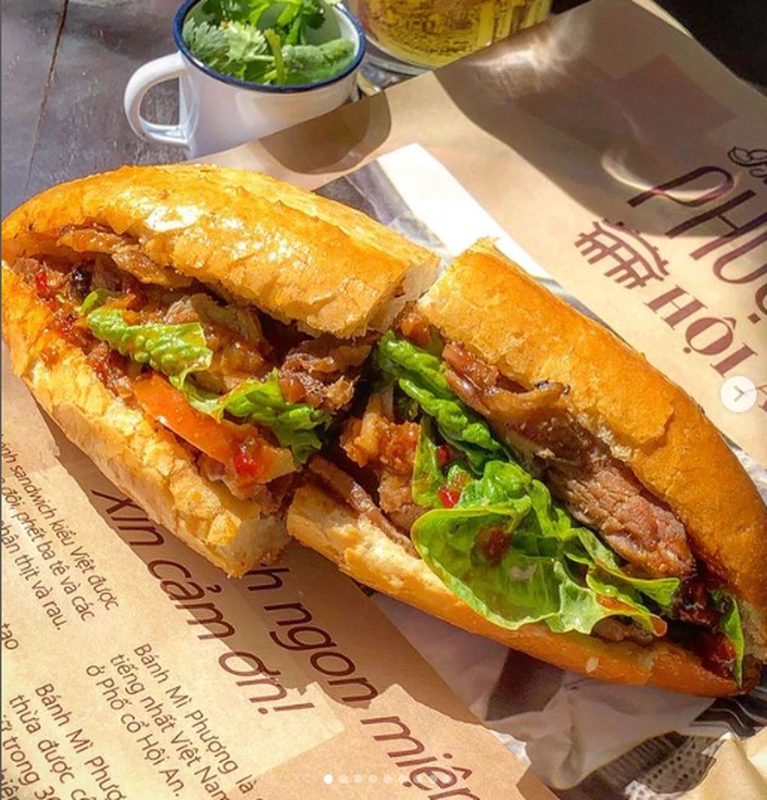
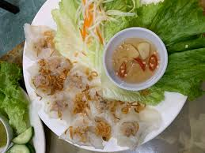
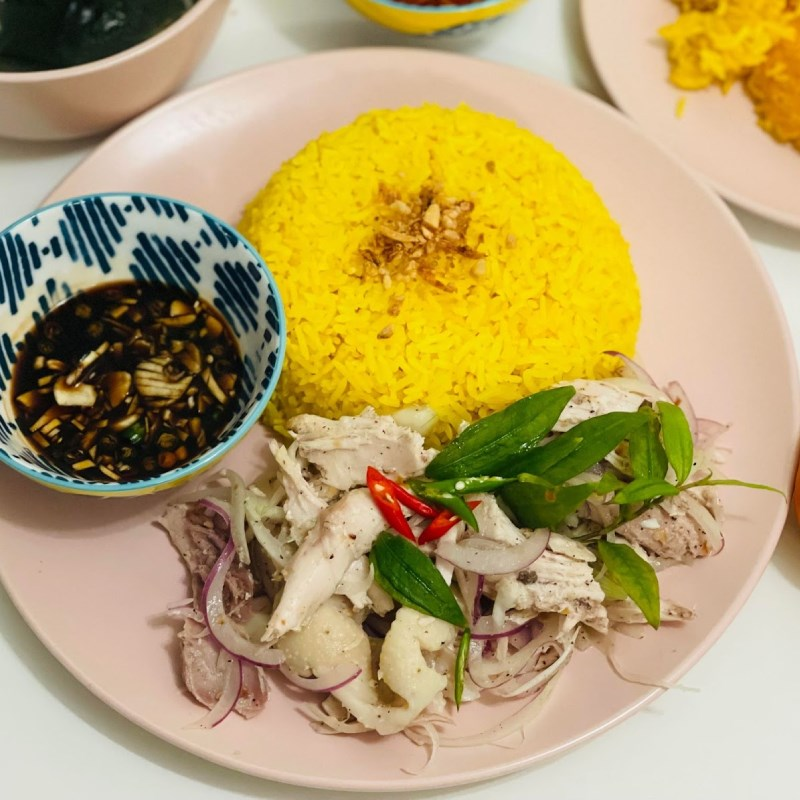
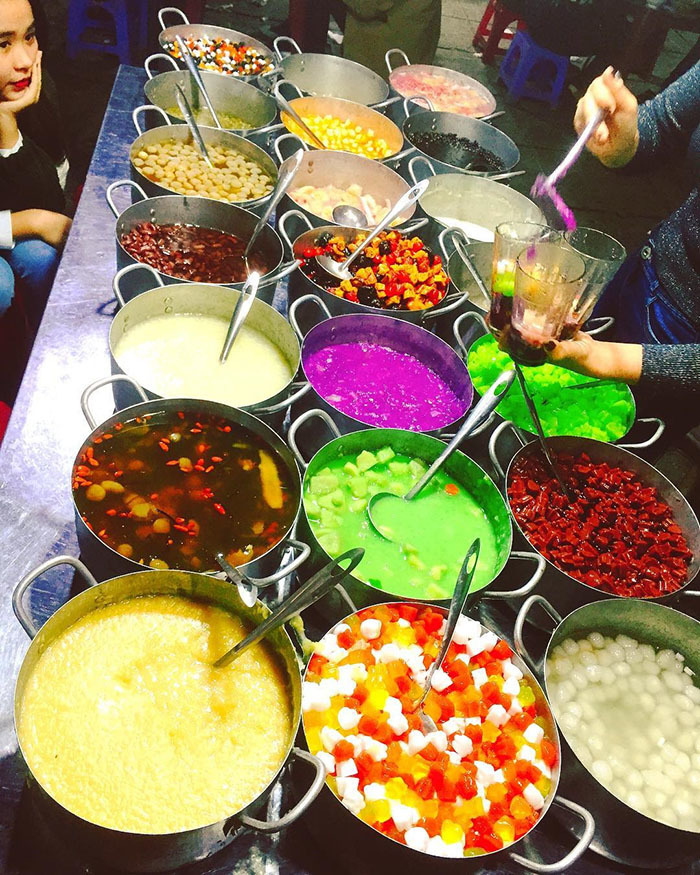
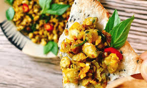

Hội An không chỉ nổi tiếng với phố cổ đẹp mê hoặc mà còn là thiên đường ẩm thực với những món ngon đã làm nên thương hiệu. Dưới đây là 7 món ăn bạn nhất định phải thử khi đến với phố Hội.
1. Cao Lầu
Cao lầu là món ăn đặc trưng không thể nhầm lẫn của Hội An. Sợi mì vàng ươm được làm từ gạo xay xát kỹ, ăn kèm với thịt heo xá xíu, rau sống và nước dùng đậm đà. Điều đặc biệt là nước dùng cao lầu chỉ có ở Hội An mới chuẩn vị.
Địa chỉ nên thử: Quán Cao Lầu Thanh - 26 Thái Phiên
2. Mì Quảng
Mặc dù là đặc sản của Quảng Nam nhưng mì Quảng ở Hội An có hương vị rất riêng. Sợi mì vàng tươi được chan nước dùng từ xương heo hầm, ăn kèm tôm, thịt gà hoặc thịt heo cùng rau sống và bánh tráng.
Địa chỉ nên thử: Mì Quảng Bà Mua - 19 Trần Phú
3. Bánh Mì Phượng
Được bình chọn là một trong những bánh mì ngon nhất thế giới, bánh mì Phượng với lớp vỏ giòn tan, nhân thịt, pate đậm đà cùng rau sống tươi ngon là món ăn không thể bỏ qua.
Địa chỉ: Bánh mì Phượng - 2B Phan Châu Trinh
4. Bánh Bao - Bánh Vạc
Còn được gọi là "bánh trắng đen", bánh bao (trắng) và bánh vạc (đen) là món ăn độc đáo của Hội An. Bánh làm từ bột gạo, nhân tôm thịt, ăn kèm nước chấm chua ngọt và rau sống.
Địa chỉ nên thử: Bánh bao bánh vạc Bà Liên - 533 Hai Bà Trưng
5. Cơm Gà Hội An
Cơm gà Hội An có màu vàng nghệ đặc trưng, gà xé phay, ăn kèm với rau răm, hành tây và nước mắm tỏi ớt. Cơm được nấu với nước luộc gà nên rất thơm và đậm đà.
Địa chỉ nên thử: Cơm gà Bà Buội - 22 Phan Châu Trinh
6. Chè Hội An
Hội An có nhiều loại chè ngon như chè bắp, chè đậu xanh, chè thưng... nhưng nổi tiếng nhất là chè bột lọc heo quay với vị ngọt thanh của đường phèn, béo ngậy của heo quay và dai dai của bột lọc.
Địa chỉ nên thử: Chè Liên - 155 Trần Phú
7. Bánh Đập - Hến Xào
Bánh đập (bánh tráng nướng giòn đập dập) ăn kèm với hến xào là món ăn dân dã nhưng đầy hấp dẫn. Vị giòn của bánh, béo ngậy của hến xào với hành phi tạo nên hương vị khó quên.
Địa chỉ nên thử: Quán Bà Già - Cẩm Nam
Mẹo khi thưởng thức ẩm thực Hội An:
- Nên đi theo nhóm để có thể chia sẻ và thử nhiều món
- Giá đồ ăn ở Hội An khá rẻ, trung bình 15.000-50.000đ/món
- Các quán ngon thường đông khách, nên đi sớm hoặc tránh giờ cao điểm
- Nhớ mang theo khăn giấy ướt vì nhiều quán không cung cấp
Ẩm thực Hội An là sự kết hợp tinh tế giữa hương vị truyền thống và nét độc đáo riêng. Mỗi món ăn đều mang trong mình câu chuyện về văn hóa và con người nơi đây. Hãy thong thả dạo bước phố cổ và thưởng thức từng món ngon để cảm nhận trọn vẹn vẻ đẹp của Hội An!